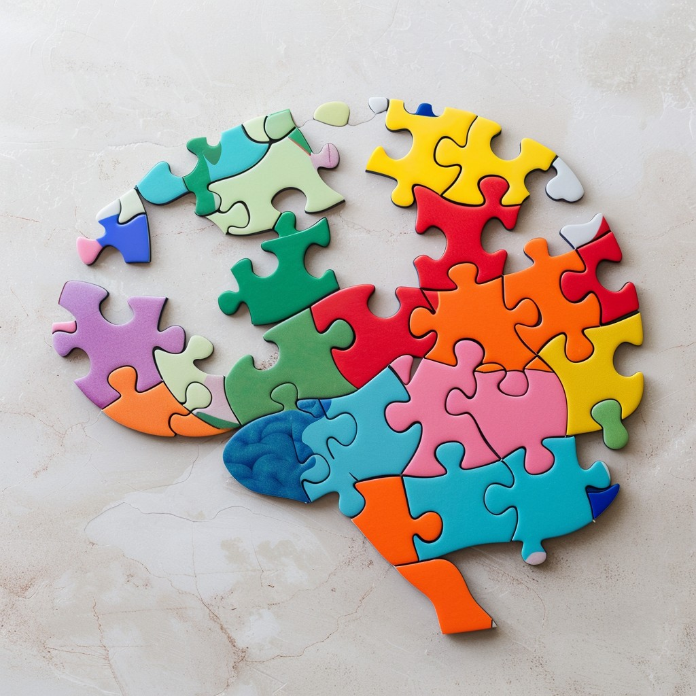

Problem solving
28th june 2024
A time when I elegantly solved a problem.
One instance where I elegantly solved a problem was during the
gradebook exercise, specifically when I needed to add a new
property with a key. Drawing from my previous experience with
objects proved invaluable; it provided a clear framework for
tackling the task. Reflecting on how I utilized objects in prior
exercises helped me seamlessly integrate the new property into the
gradebook exercise.
Reflect on how confident you feel using each of these
problem-solving techniques/processes:
Throughout this challenge, I employed a variety of problem-solving
techniques, including pseudocode, the rubber duck method,
Googling, and console logging. Googling different concepts enabled
me to explore their applications and understand them better
through examples of code in action. Another effective strategy was
using the rubber duck method, where articulating my issues aloud
helped me pinpoint mistakes and self-correct effectively.
Reflect on a time you were reluctant to ask for help. Consider
what made you reluctant to do so. What might you try differently
next time?
Throughout this challenge, I hesitated to ask many questions
because I believed I should grasp everything on my own. However,
as a friend wisely says, 'asking a question may make you feel
foolish for a moment, but not asking can leave you ignorant
forever.' While I didn't directly seek help, I did benefit from
others' questions on Discord to solve my own problems. Next time,
I realize the importance of reaching out sooner for assistance,
enabling me to resolve issues promptly rather than waiting for
others to face similar challenges.
 Shae Jacob's Blog
Shae Jacob's Blog